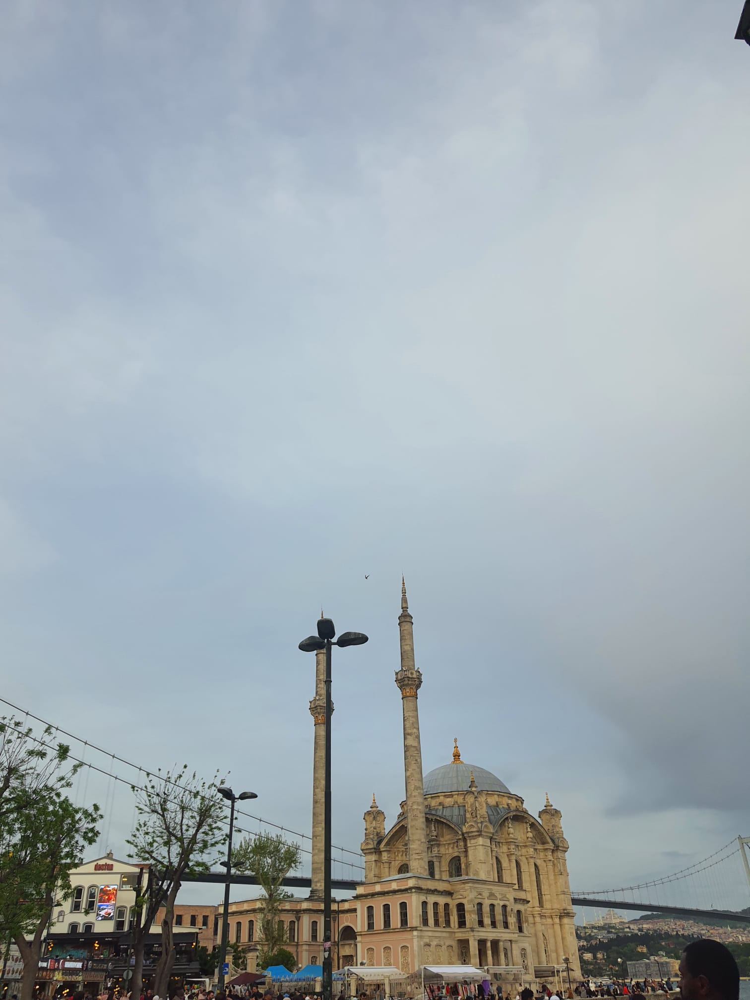
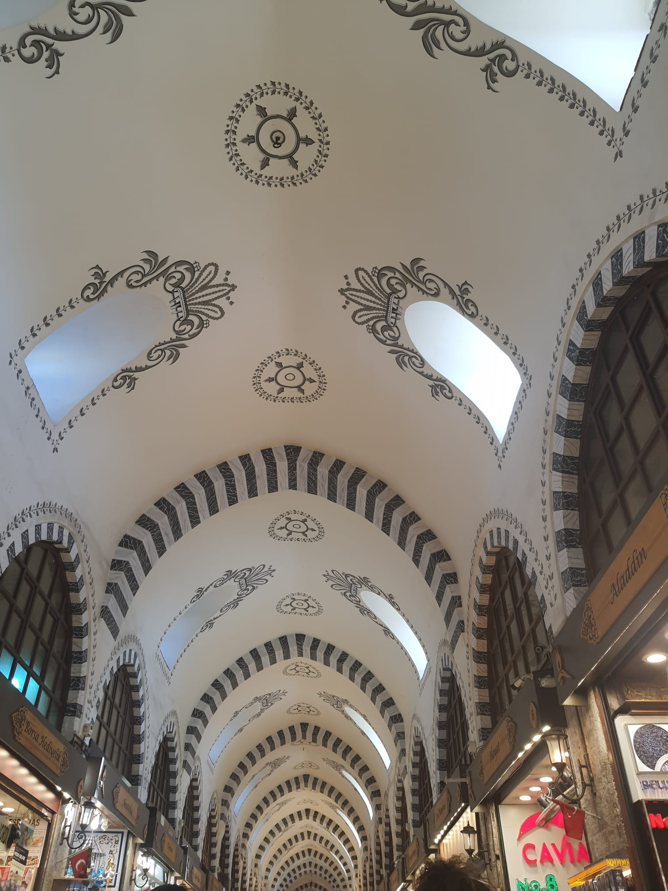
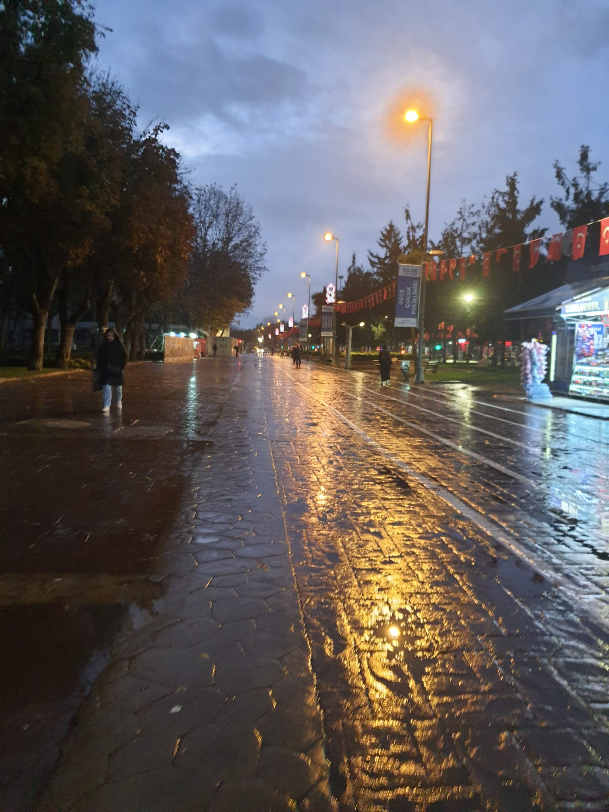
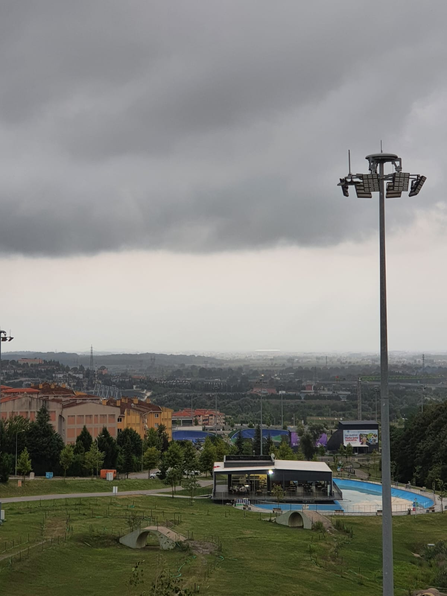
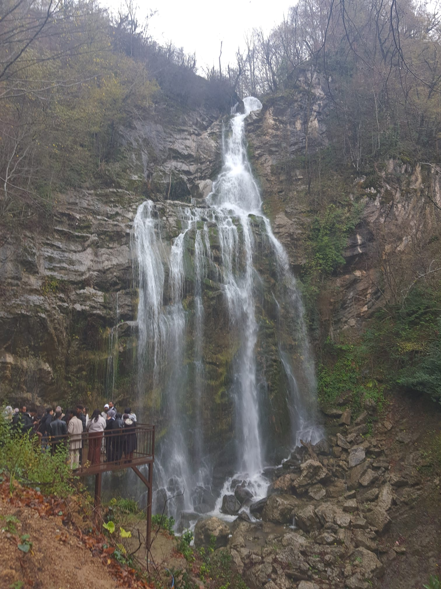
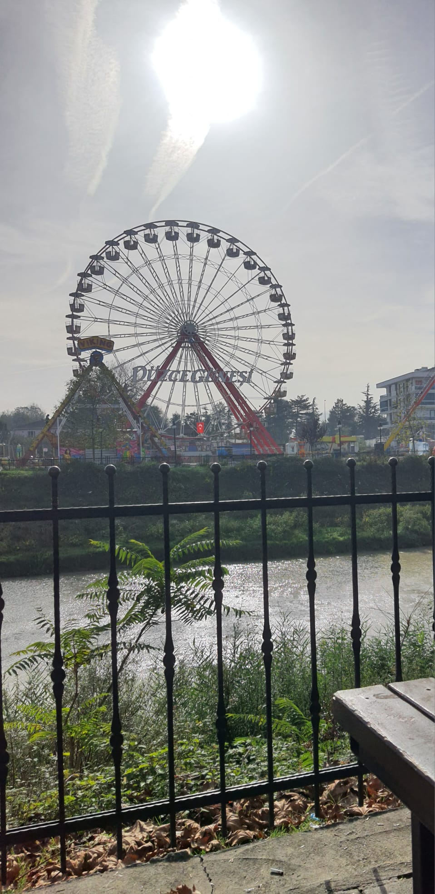
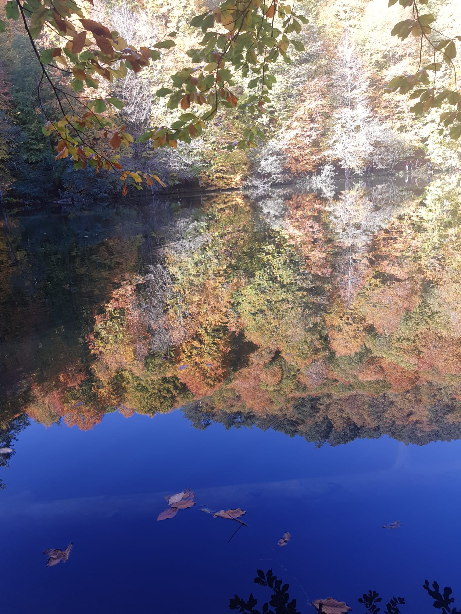
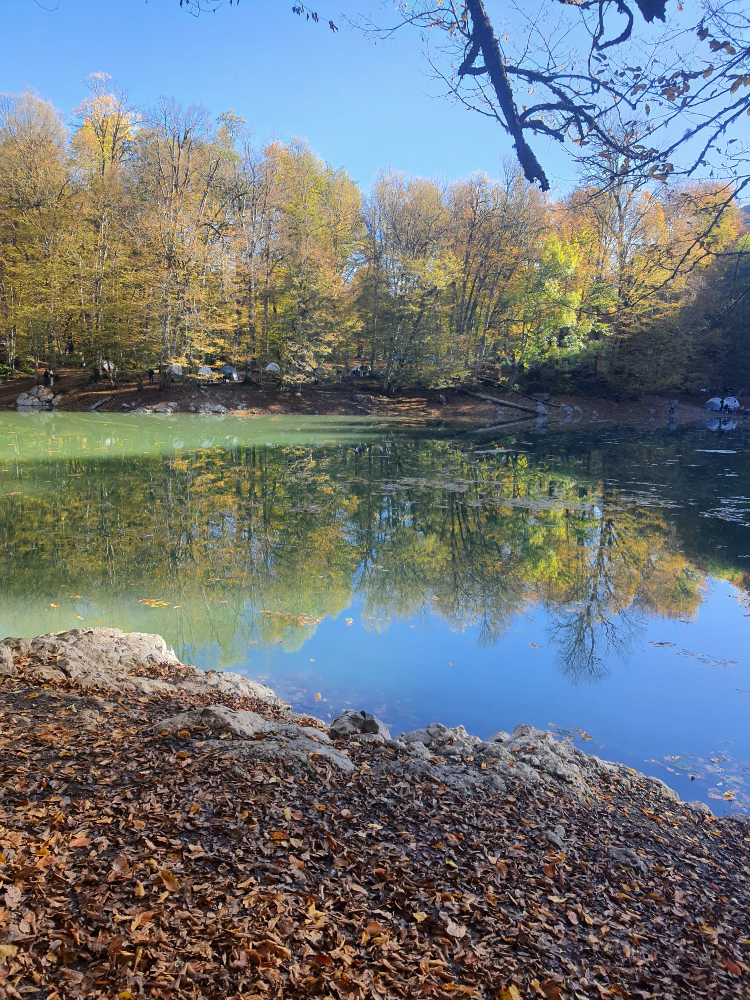

Tarihin ve modernizmin iç içe geçtiği, dünyanın en eşsiz şehirlerinden biri.
Gezilecek Yerler: Tarihi Yarımada (Ayasofya, Sultanahmet), Galata Kulesi ve Boğaz hattı.
Öneri:Güne Karaköy'de bir kahve ile başlayıp, vapurla Anadolu yakasına geçerek gün batımını izlemek İstanbul'un olmazsa olmazıdır.


İstanbul'a yakınlığıyla bilinen, gölleri ve yaylalarıyla nefes alan bir durak.
Gezilecek Yerler: Sapanca Gölü kıyısı, Maşukiye şelaleleri ve Taraklı'nın tarihi evleri.
Öneri:Hafta sonu kalabalığından kaçmak istiyorsanız, sabahın erken saatlerinde Sapanca Gölü kenarında yürüyüş yapmayı tercih edin.



Karadeniz'in giriş kapısı sayılan, su kaynakları ve doğa sporlarıyla ünlü bir şehir.
Gezilecek Yerler: Güzeldere Şelalesi, Samandere Şelalesi ve rafting tutkunları için Melen Çayı.
Öneri:Güzeldere Şelalesi Türkiye'nin en yüksekten dökülen şelalelerinden biridir; fotoğraf makinenizi yanınıza almayı unutmayın!



Gölleri ve ormanlarıyla her mevsim farklı bir renk paleti sunan doğa harikası.
Gezilecek Yerler: Abant Gölü, Gölcük Tabiat Parkı ve masalsı görüntüsüyle Yedigöller.
Öneri:Özellikle sonbaharda Yedigöller'e giderek sarı ve turuncunun her tonuna şahitlik edebilirsiniz.


